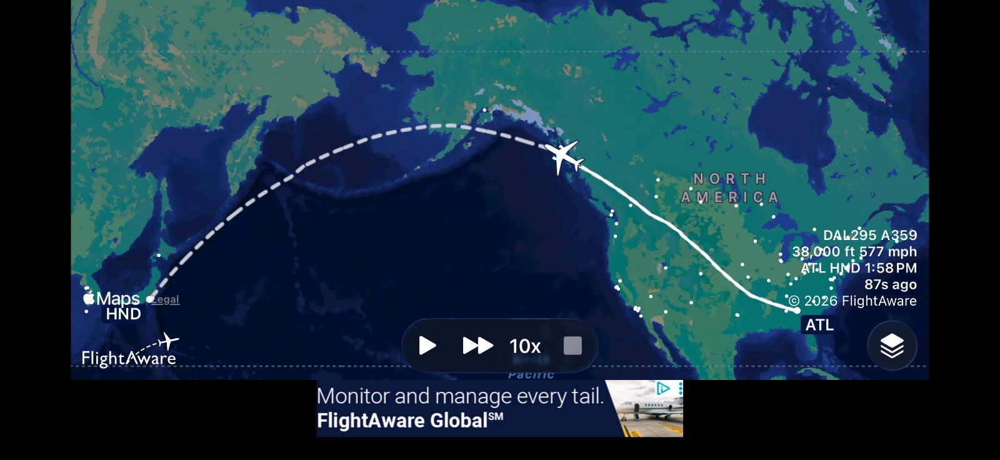
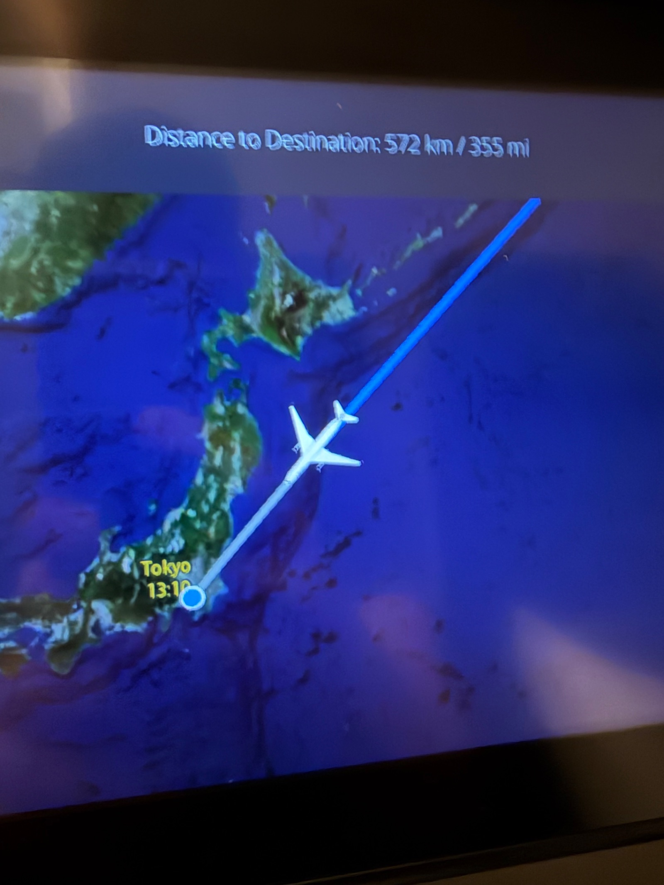
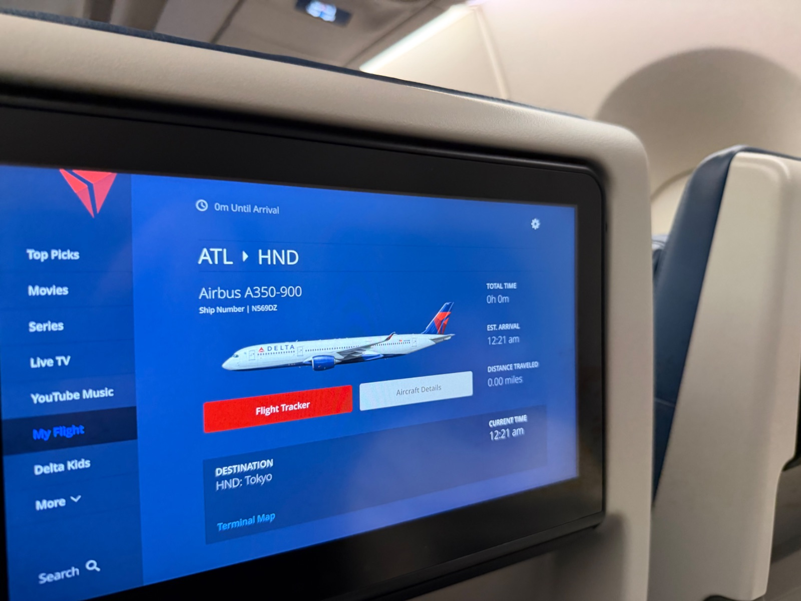
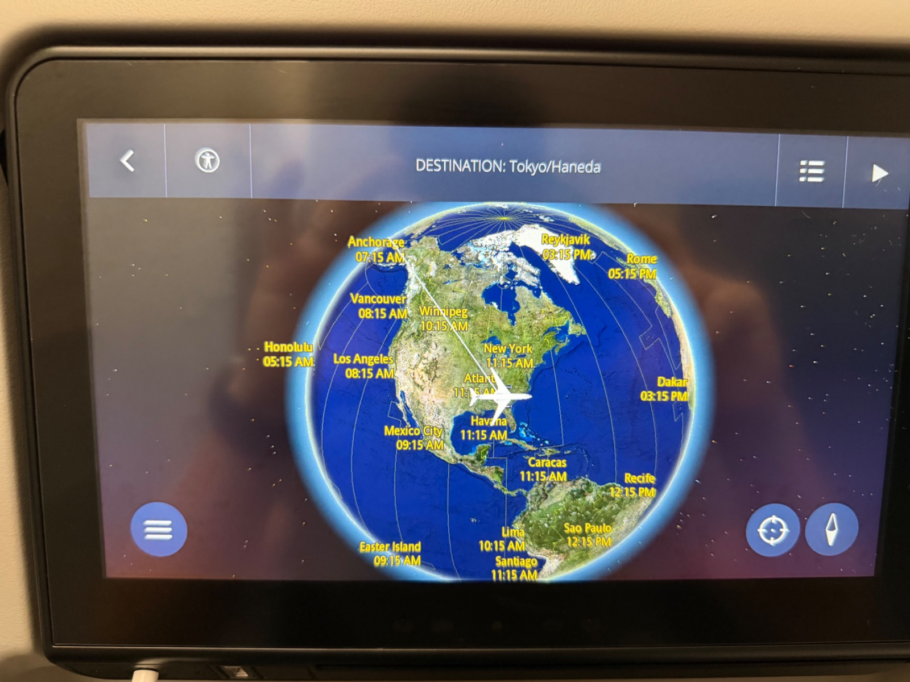
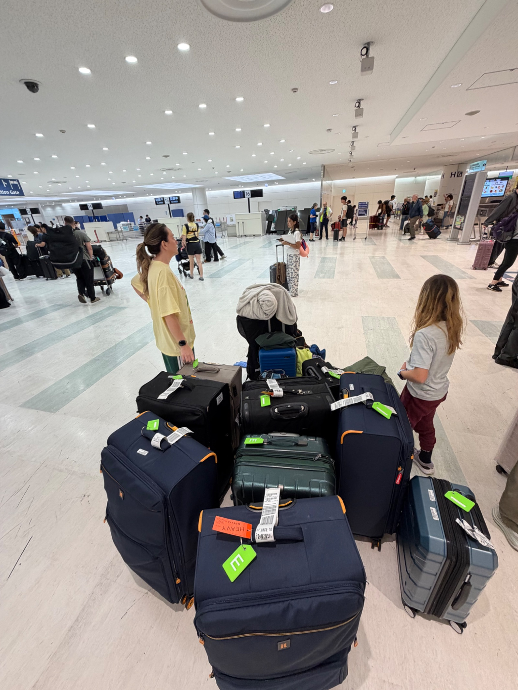
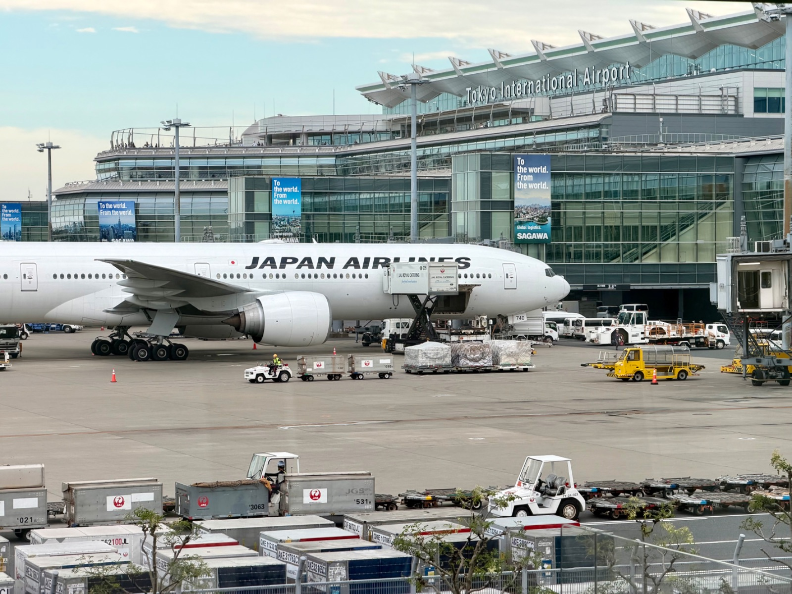

Konnichiwa, Japan! Wheels Up on Our Biggest Adventure Yet







Wheels Up for Japan!
After months of planning, packing, and endless checklists, the big day finally arrived: we are on our way to Japan! ✈️🇯🇵
Leaving the U.S. comes with a mix of high energy, exhaustion, and excitement for what lies ahead on the other side of the world. Standing at the gate watching our Airbus A350 get ready for boarding made it all feel officially real.
A Bittersweet Hitch in the Plan: Update on Charley
As smoothly as we hoped travel day would go, PCS moves with pets rarely happen without a curveball. Due to airline temperature restrictions, pet travel is strictly halted when ground temperatures exceed 80°F along any leg of the route. Because summer heat was running high, we made the tough call to leave Charley safely behind with a dear friend. 🐾
While it broke our hearts not to have her on the plane with us right now, her safety comes first! She is being pampered and well cared for while we wait for the temperatures along the flight paths to cool down below that 80-degree threshold so she can make her safe journey to join us in Japan.
Crossing the Pacific (ATL ✈️ HND)
Our route took us on the long journey up through Canada, dynamic flight paths across Alaska and the Aleutian Islands, and straight down into the Pacific towards Tokyo’s Haneda Airport (HND).
Between watching the flight tracker map count down the remaining hundreds of miles and trying to adjust to the massive time zone shift, the long haul over the ocean gave us plenty of time to reflect on this huge new chapter.
Landed at Haneda & All the Luggage!
Touching down at Haneda Airport was an amazing feeling! After navigating international arrivals and collecting what felt like a small mountain of luggage—seven giant suitcases and counting—we officially stepped onto Japanese soil.
Now, the real adventure begins: settling in, exploring our new surroundings, and getting everything ready for Charley's upcoming arrival!
Stay tuned for more updates as we navigate our first few days living in Japan!